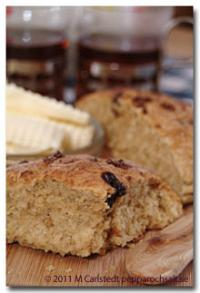

Mjuka vaniljscones

Lyxigt mjuka scones som passar perfekt till fika! Vanilj och råsocker ger smaken.
Du behöver
- 3 dl matlagningsyoghurt
- 100 g smör
- 450 g vetemjöl (7 1/2 dl)
- 2 tsk vaniljsocker
- 3 msk muscovadosocker, mörkt (går även med råsocker eller strösocker)
- 4 tsk bakpulver
- 1/2 tsk salt